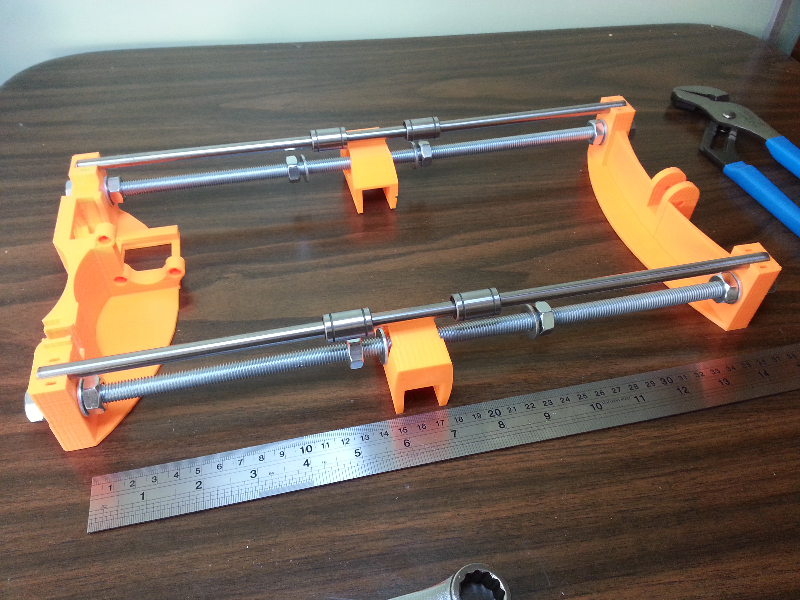

- The two M10 threaded rods
- The Y axis smooth rods
- The plastic Y end pieces (2)
- The two plastic frame brace supports
- 12 M10 nuts and washers
- Four linear bearings (LM8UU)

Next, slide two two Y end pieces over the ends of the threaded rods. Place a washer then nut on each end.
Place two linear bearings on each Y axis smooth rod.
Next, with the other Y end still loosely attacdhed, place the two Y axis smooth rods across the top and fit into the grooves alontt the top of the ends. Press down on the ends (not in the middle of the rods!) to seat the rods into the Y ends. Tighten one corner of the remaining end. Now take a moment to measure with a ruler between the end posts of the tightened side. (355mm for reference). Flip the assembly around and repeat the measurement as you tighten the remaining corner (tighten it just a little first, then measure. If the distance is a little less than the first side, tighten the inner nut outward toward the outer nut, if the distance is a little more than the first side, then tighten the outer nut toward the inner one. Try to get the two sides as close to the same distance as possible. This will help ensure your y axis bearings don't experience any binding forces). Repeat the measurement on the first side and check that all corners are nice and snug. Take your time on this step, it may require a couple iterations to get the axis square.

While the Y axis assembly is free, it is a good time to prepare the print bed which you will attach later.
Gather the following materials
- The Y axis assembly you just completed
- The wood print bed support
- The heat bed
- The four linear bearing holders
- Eight miniature zip ties
Put the heat bed circuitboard aside and place the four linear bearing holders over the linear bearings along the Y axis rods.
Turn the Y axis assembly over so that the smooth rods (and bearing holders) are against the wood print bed surface.
Align the front edge of the two bearing holders nearest the Y end idler with a line that is 80mm from the front edge of the bed.
Align the back edge of the two bearing holders nearest the Y end motor mount with a line that is approx 10mm from the back edge of the bed.
Mark all the holes for the bearing holders.
Attach the linear bearing holders to the Y axis linear bearings with zip ties.
Set the prepared wood print bed aside.